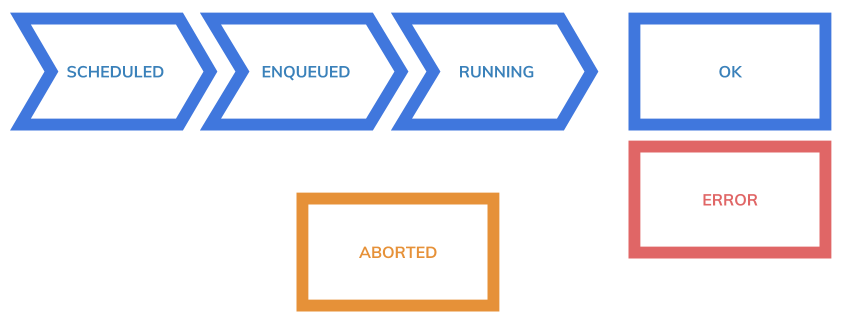

Testing
Testing Lifecycle

Requesting a test
A test can be requested though curl.
$ curl -H'content-type:application/json' \
-H"x-auth-token:${TOKEN}" \
-d'{"name": "mytest", "project": "myproject", "properties":{}}' \
http://grou.local/tests
Requesting with a JSON files
A JSON file can also be used for requesting a test.
Request
$ curl -H'content-type:application/json' \
-H"x-auth-token:${TOKEN}" \
-d @file.json \
http://grou.local/tests
file.json
{
"name":"mytest",
"project":"zip",
"tags": ["a-team", "qa03", "cenario01"],
"properties":
{
"uri":"http://localhost:8090/version",
"parallelLoaders" : 1,
"numConn": 1000,
"durationTimeMillis" :60000,
"monitTargets":"zero://s1.local?key=s1"
}
}
Response
{
"createdBy" : "mylogin",
"createdDate" : "2017-09-09T11:26:23.902+0000",
"lastModifiedBy" : "mylogin",
"lastModifiedDate" : "2017-09-09T11:26:23.902+0000",
"name":"mytest",
"project":"zip",
"loaders" : [ ],
"tags": ["a-team", "qa03", "cenario01"],
"status" : "SCHEDULED",
"dashboard" : "http://localhost:3000/mydashboard/?project=zip&alltags=UNDEF",
"properties":
{
"uri":"http://localhost:8090/version",
"parallelLoaders" : 1,
"numConn": 1000,
"durationTimeMillis" :60000,
"monitTargets":"zero://s1.local?key=s1"
}
}